相變態熱力學
15.0 本章預覽
第 15 章是全書的高潮章節，將前面建立的所有熱力學原理——從第一章的基本概念到第七章的相平衡條件、第九章的溶液模型、第十章的相圖——整合為理解相變態的統一框架。相變態是材料科學的核心：凝固、固態相變、析出、麻田散體變態、有序–無序轉變等，皆由熱力學驅動力與動力學能障共同決定。本章聚焦於熱力學如何定義「為何變」與「變到何種程度」，但不處理擴散等動力學細節。Gaskell 以 (1) 驅動力的量化、(2) 界面能的阻礙角色、(3) 成核理論、(4) 毛細效應、(5) 藍道二階相變理論等五大主軸，構成一條從「可能發生」到「如何發生」的邏輯鏈。
🧭 本章推理地圖
偏離平衡造成自由能差（§15.1）→ 過冷度與 $T_0$ 曲線決定相變是否有熱力學驅動力（§15.1–§15.2）→ 形成新相需要付出界面能（§15.3）→ 體積驅動力與表面能競爭產生成核半徑與能障（§15.4）→ 曲率造成局部平衡改變與熟化（§15.5）→ 藍道理論用序參數描述連續相變與 spinodal 行為（§15.6）。
15.1 熱力學與驅動力
驅動力的本質：ΔG
任何相變態的根本驅動力是母相與生成相之間的吉布斯自由能差 ΔG。當 ΔG < 0，反應在熱力學上自發可行；ΔG 的絕對值愈大，驅動力愈強。對於凝固（液→固），驅動力來自於過冷度 ΔT——即平衡熔點 Tm 與實際溫度 T 的差值。在 T = Tm 時，ΔG = 0（兩相平衡）；在 T < Tm 時，固相的 G 低於液相，故 ΔG < 0。
式 15.1：單位體積驅動力（過冷度線性近似）
此近似成立的前提是 ΔCp ≈ 0（液相與固相的熱容量相近），這在金屬系統中普遍合理。式中 ΔSfus 為熔化熵。根據理查定律（Richard's rule），大多數金屬的 ΔSfus ≈ R ≈ 8.314 J/mol·K。因此，給定過冷度 ΔT = 10 K，典型金屬的摩爾驅動力約為 ΔG ≈ R·ΔT ≈ 83 J/mol；單位體積則須除以莫耳體積 Vm。
驅動力與過冷度的關係
嚴格而言，ΔG 並非 ΔT 的完全線性函數，因為 ΔS 與 ΔH 本身也隨溫度變化。但在小過冷度範圍內（ΔT ≪ Tm），線性近似已足夠精確。對較大過冷度或涉及固態相變時，可使用以下更嚴謹的形式：
在實務上，ΔCp 項通常很小（對金屬約為數 J/mol·K），故理查定律近似已廣泛用於工程估算。本節的要點在於：過冷度是驅動力的代名詞——過冷愈大，ΔG 愈負，相變態的熱力學傾向愈強。但這不保證相變態「會發生」，因為成核尚有界面能的障礙（詳見 15.3–15.4）。
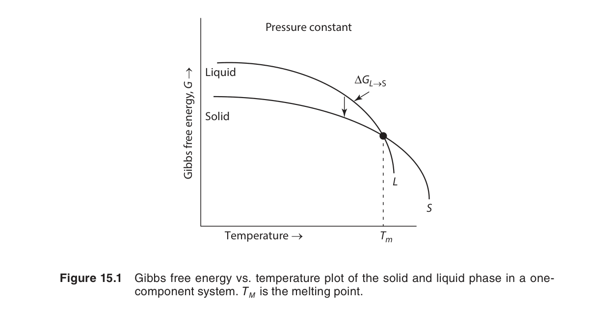
圖15.1：凝固驅動力 ΔGv 的圖示——液相與固相的自由能隨溫度變化。在 T = Tm 時兩相自由能相等（ΔG = 0）；在 T < Tm 時，固相自由能低於液相，產生負的 ΔGv 驅動凝固。
固態相變的驅動力
對於固態中的相變態（如 γ-Fe → α-Fe、過飽和固溶體的析出），驅動力來源不是過冷度，而是成分過飽和度或溫度偏離相界線。此時 ΔG 須由溶液的熱力學模型計算（參見第 9 章正規溶液模型），常以切線法則（tangent rule）或公切線構造求得母相與生成相之間的化學勢差。
自編概念例：由過冷度估算凝固驅動力
若某金屬 $T_m=1000\ \text{K}$、$\Delta H_{fus}=10\ \text{kJ/mol}$，在 950 K 凝固時 $\Delta T=50\ \text{K}$，則 $|\Delta G|\approx \Delta H_{fus}\Delta T/T_m=0.5\ \text{kJ/mol}$。過冷度越大，凝固驅動力越大。
15.2 T₀ 曲線的應用
T₀ 溫度：無分配相變態的熱力學界限
T₀ 溫度定義為：在相同成分下，母相與生成相具有相等吉布斯自由能的溫度——即 Gα(x, T₀) = Gγ(x, T₀)。此概念對無擴散（無分配）相變態至關重要，因為這類相變態中，原子沒有機會進行長程擴散重新分配，兩相必須維持相同成分。
式 15.2：T₀ 條件的數學表述
在相圖上，T₀ 曲線位於兩相區內，介於兩條相界線之間。以 Fe-C 系統為例：奧氏體（γ，FCC）與肥粒鐵（α，BCC）之間的 T₀ 線描繪出麻田散體相變態的熱力學極限——僅當溫度低於 T₀ 時，無擴散轉變才在熱力學上可能（ΔG < 0）；若溫度高於 T₀，則即使施加極大應力也無法引發麻田散體變態，因為此時 γ 相比 α 相更穩定。
T₀ 曲線與相圖的關係
在 A-B 二元相圖中，T₀ 曲線的形狀由兩相的自由能–成分曲線的相對位置決定。由於正規溶液參數 Ω 影響 G(x) 的曲率（見第 9 章），T₀ 曲線在 Ω 較大時可能呈現複雜形狀，甚至在某些成分區間不存在（即不存在兩相 G 相等的溫度），這意味著無分配轉變在該成分範圍內不可能發生。
Gaskell 強調：T₀ 曲線是熱力學的必要條件而非充分條件。即使 T < T₀（驅動力為負），仍可能需要額外的機械驅動力（應力）來觸發麻田散體變態，且變態本身會引入應變能與界面能，進一步提升實際所需的過冷度。
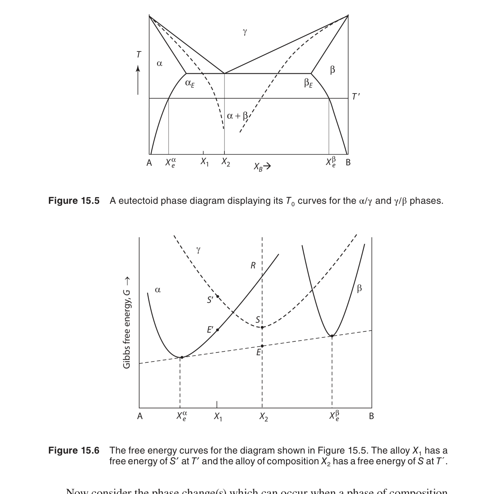
圖15.5：二元相圖上的 T₀ 曲線——位於兩相區內，標示同成分下 α 與 γ 相自由能相等的溫度軌跡。T₀ 線是無分配（partitionless）相變態的熱力學極限。
圖15.6：無分配相變態的自由能–成分曲線——在 T₀ 溫度下，兩相的 G(x) 曲線在相同成分 x 處相交（Gα(x) = Gγ(x)），而非由公切線連接。
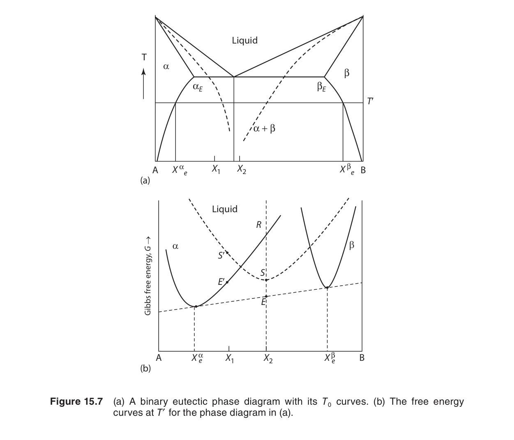
圖15.7：Fe-C 系統中的麻田散體形成——T₀ 線標示奧氏體（γ）→麻田散體（α′）無擴散轉變的熱力學界限。Ms 溫度低於 T₀，因需額外驅動力克服應變能與界面能。
🔍 推導：T₀ 溫度條件——從自由能相等到相變態界限
• 若 Ωα ≈ Ωγ，T₀(x) 近乎兩純組元 T₀ 值的線性內插。
• 若 Ωα ≫ Ωγ，T₀ 曲線在中間成分處下沉——無分配轉變的熱力學窗口變窄。
• 極端情況：T₀ 在某一成分範圍內不存在（無實數解），則該成分的無分配轉變在熱力學上不可能。
自編概念例：判斷無分配轉變是否可行
若同一成分下母相 $\gamma$ 的自由能仍低於產物相 $\alpha$，即使低於平衡相界，無分配 $\gamma\rightarrow\alpha$ 也沒有熱力學驅動力。只有降到 $T_0$ 以下，兩相同組成自由能排序反轉，無分配轉變才可行。
15.3 界面能
新相誕生的代價：創建界面
當一個新相從母相中形成時，兩相之間必然存在界面（interface）。界面上的原子處於非平衡位置、鍵結不完整，因此具有比內部原子更高的能量。這份額外的能量稱為界面能 γ（單位：J/m²），是相變態——特別是成核階段——的關鍵阻力來源。
對一個半徑為 r 的球形晶核，系統的總自由能變化由兩項構成：
式 15.3：球形晶核的自由能變化
第一項（體積項，∝ r³）為負（驅動力），因為 ΔGv < 0；第二項（界面項，∝ r²）為正（能量代價）。在 r 極小時，界面項主導，ΔG(r) 為正且隨 r 增加而上升——這意味著極小的原子團簇熱力學上不穩定，傾向溶解而非成長。只有當 r 超過某個臨界值後，體積項的負貢獻超過界面項，ΔG(r) 才開始下降，晶核得以自發成長。
界面能的數量級
下表列出典型材料系統中的界面能數量級，幫助建立數值直覺：
| 界面類型 | 典型 γ (J/m²) | 範例系統 |
|---|---|---|
| 固–液界面 | 0.1 – 0.5 | 純金屬凝固（Cu: ~0.18，Ni: ~0.26） |
| 固–固（大角度晶界） | 0.3 – 1.0 | 退火金屬的晶界 |
| 固–固（共格界面） | 0.01 – 0.1 | 析出物與基體的完全共格界面 |
| 固–固（半共格界面） | 0.1 – 0.5 | 部分失配的析出物界面 |
| 固–氣界面（表面） | 1.0 – 3.0 | 金屬的表面能（Au: ~1.4，W: ~2.9） |
表 15.1：典型界面能數值
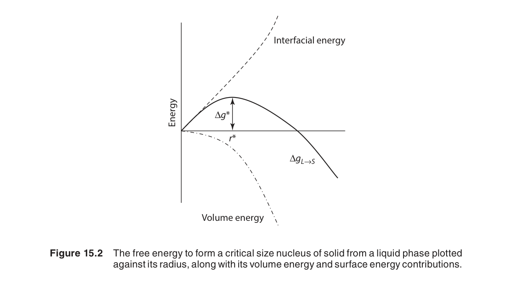
圖15.2：球形晶核的自由能變化——體積項（∝ r³，負貢獻）與界面項（∝ r²，正貢獻）的競爭。在臨界半徑 r* 處，ΔG 達到最大值 ΔG*。
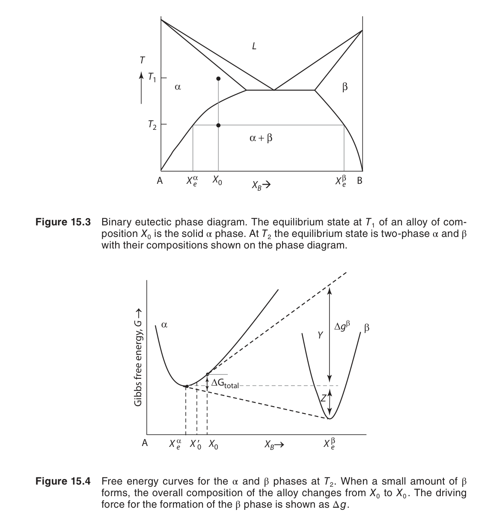
圖15.3：ΔG(r) 曲線——在 r < r* 時，晶核傾向收縮溶解（d(ΔG)/dr > 0 表示增大 r 不利）；在 r > r* 時，晶核自發成長（d(ΔG)/dr < 0）。r* 對應 d(ΔG)/dr = 0。
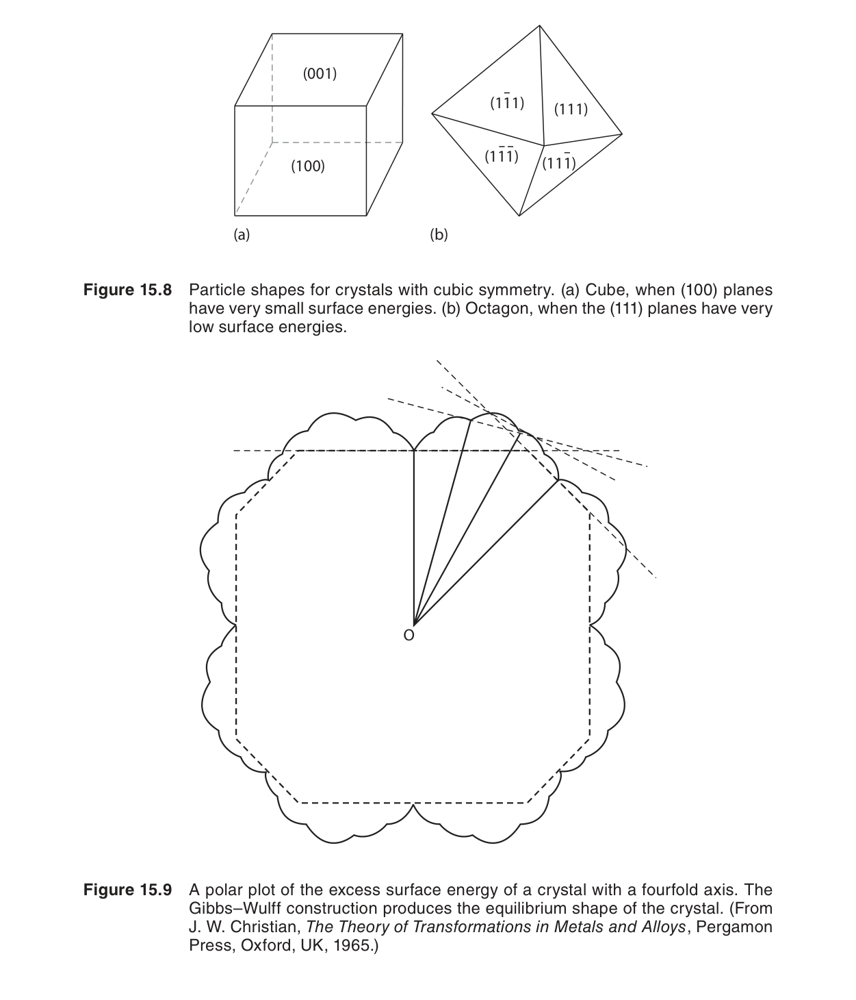
圖15.8：界面能的物理起源——界面處原子鍵結斷裂模型。內部原子配位數完整（如 FCC 的 12 個最近鄰），界面原子配位數減少，每個斷鍵貢獻 ~ε/2 的能量（ε 為鍵能），總界面能 γ ≈ (斷鍵數密度) × (ε/2)。
界面能的物理起源：斷鍵模型
界面能的微觀來源可透過斷鍵模型（broken-bond model）理解。以面心立方（FCC）晶體為例，內部原子的最近鄰配位數 Z_bulk = 12。在界面處，原子失去部分鄰居——例如 FCC (111) 表面原子僅有 9 個最近鄰（失去 3 個）。若每個鍵的能量為 ε，則每個界面原子的超額能量約為 3 × (ε/2)，因子 1/2 乃因每個鍵由兩個原子共享。
其中 A_per_atom 為每個界面原子佔據的面積。此簡單模型對金屬表面能給出合理估計（例如 Cu (111)：γ ≈ 1.8 J/m²，與實驗值 ~1.8 J/m² 吻合）。對於固–固界面，需進一步考慮兩側晶體鍵結的差異及結構失配——大角度晶界的 γ 約為表面能的 1/3（因為原子仍有部分跨界面鍵結），而完全共格界面的 γ 可低至 ~0.01 J/m²（幾乎無斷鍵）。
界面能的數值決定了臨界晶核的大小與成核速率。γ 愈小，成核能障愈低，相變態愈容易發生。這解釋了為何異質成核（在既有表面上成核，有效界面能降低）遠比均質成核普遍——詳見 15.4 節。
自編概念例：界面能如何影響成核
若兩個系統的體積驅動力相同，但 A 的界面能是 B 的兩倍，則成核能障約隨 $\gamma^3$ 放大，A 的均質成核會困難許多。這就是為什麼晶界、夾雜物與容器壁能大幅促進異質成核。
15.4 成核與界面能
成核（nucleation）是新相從母相中「誕生」的初始步驟。古典成核理論（Classical Nucleation Theory, CNT）將 ΔG(r) 對 r 求極值，得出臨界條件。
均質成核
對 ΔG(r) = (4/3)πr³ΔGv + 4πr²γ 取 d(ΔG)/dr = 0，得：
🔍 推導：臨界半徑 r* = −2γ/ΔGv
式 15.4a：臨界半徑
將 r* 代回 ΔG(r)，得臨界成核自由能障：
🔍 推導：臨界成核能障 ΔG* = 16πγ³/3(ΔGv)²
式 15.4b：臨界成核能障
這兩個公式包含了成核理論的核心洞見：
- r* 與過冷度成反比：ΔGv ∝ ΔT，故 r* ∝ 1/ΔT。過冷度愈大，臨界晶核愈小。
- ΔG* 與 (ΔT)² 成反比：過冷度加倍，能障降為四分之一。
- ΔG* ∝ γ³：界面能對能障的影響極其敏感——γ 減半，能障降至八分之一。
📝 數值例題 — 純銅的均質成核
求：在過冷度 ΔT = 200 K 時的 r* 與 ΔG*。
異質成核
在實務中，絕大多數相變態是異質成核——晶核在模壁、雜質顆粒、或晶界等既有表面上形成。基板的存在降低了創建新界面所需的能量，使成核能障大幅下降。
若晶核在平坦基板上形成一個球冠（spherical cap），接觸角為 θ（由楊氏方程式決定：γML = γSM + γSL cos θ，其中 M = 模具/基板、L = 液相/母相、S = 固相晶核），則異質成核能障為均質值的 f(θ) 倍：
式 15.5：異質成核因子
圖15.9：異質成核的球冠模型——晶核（S）在平坦基板（M）上以接觸角 θ 形成球冠。三界面張力 γML、γSM、γSL 在 triple junction 處達成力平衡（楊氏方程式）。
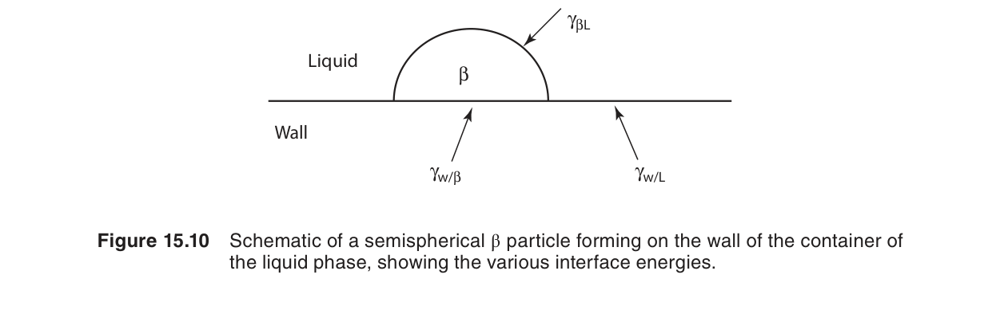
圖15.10：接觸角 θ 對異質成核的影響——θ 愈小（潤濕愈佳），f(θ) 愈接近 0，成核能障愈低。θ = 180° 時 f(θ) = 1，還原為均質成核。
圖15.4：臨界晶核尺寸與過冷度的關係——r* ∝ 1/ΔT，過冷度愈大，臨界晶核愈小。在極小過冷度下，r* → ∞（無成核可能）。
🔍 推導：異質成核因子 f(θ)——球冠幾何與界面張力平衡
• θ = 90°：f(θ) = 1/2，能障減半。
• θ → 0°（完全潤濕）：f(θ) → 0，無成核能障——晶核自發鋪展。
實務中，有效晶粒細化劑（如 Al 合金中的 TiB₂）的 θ 約在 5°–20° 範圍，f(θ) ∼ 10−3–10−4，成核能障可忽略。
f(θ) 的性質：
- θ → 180°（完全不潤濕）：f(θ) → 1（晶核不與基板接觸，等同均質成核）
- θ → 90°：f(θ) = 0.5（能障減半）
- θ → 0°（完全潤濕）：f(θ) → 0（無成核能障，自發「鋪展」）
成核速率
雖然本章重點在熱力學而非動力學，Gaskell 仍簡要提及成核速率 I（單位：m−3·s−1）與 ΔG* 的指數關係：
第一項指數為熱力學成核能障，第二項為原子跨越界面的擴散活化能 QD。ΔG* 隨過冷度增大而急遽下降，使得成核速率在某一臨界過冷度處爆發性增長——此即「成核爆發」（nucleation burst）現象。
自編概念例：臨界半徑的方向判斷
若過冷度增加，使 $|\Delta G_v|$ 變大，則 $r^*=-2\gamma/\Delta G_v$ 變小。這代表較小的晶胚也能長大，因此成核更容易發生。
15.5 毛細現象與局部平衡
吉布斯–湯姆生效應
吉布斯–湯姆生效應（Gibbs-Thomson effect）描述了界面曲率如何改變相平衡溫度。在平面界面（r → ∞）下，平衡溫度為 Tm；但對一個有限半徑 r 的球形固體顆粒（或液滴），其平衡熔點（或凝固點）會因曲率而偏移：
式 15.6：吉布斯–湯姆生方程式（球形顆粒）
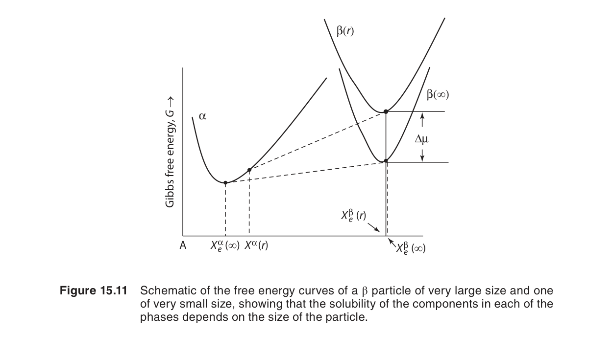
圖15.11：吉布斯–湯姆生效應——小顆粒因曲率高而具有較大的表面–體積比，界面自由能貢獻使熔點顯著下降。r → ∞ 時還原為塊材熔點 Tm。
🔍 推導：吉布斯–湯姆生方程式 ΔT = 2γTm/(ΔHfus·r)
此式的物理意義：小顆粒比大顆粒在更低的溫度下熔化（對固–液平衡而言，ΔTr > 0 表示熔點下降）。原因是小顆粒具有較高的表面–體積比，界面自由能的貢獻使整體自由能提高，故在較低溫度即能達到與液相的平衡。
奧斯特瓦爾德熟化
吉布斯–湯姆生效應直接解釋了奧斯特瓦爾德熟化（Ostwald ripening）：在析出物系統中，小顆粒周圍的基體溶質濃度（由吉布斯–湯姆生效應決定）高於大顆粒周圍。濃度梯度驅動溶質從小顆粒附近擴散至大顆粒處，導致大顆粒吞噬小顆粒而成長。此過程的驅動力正是界面能的降低——系統傾向最小化總界面面積。
奧斯特瓦爾德熟化的經典 LSW 理論（Lifshitz–Slyozov–Wagner）給出平均粒徑隨時間的 ∝ t1/3 成長律。Gaskell 強調，此現象的熱力學根源就是吉布斯–湯姆生關係——曲率效應造成的局部平衡濃度差。
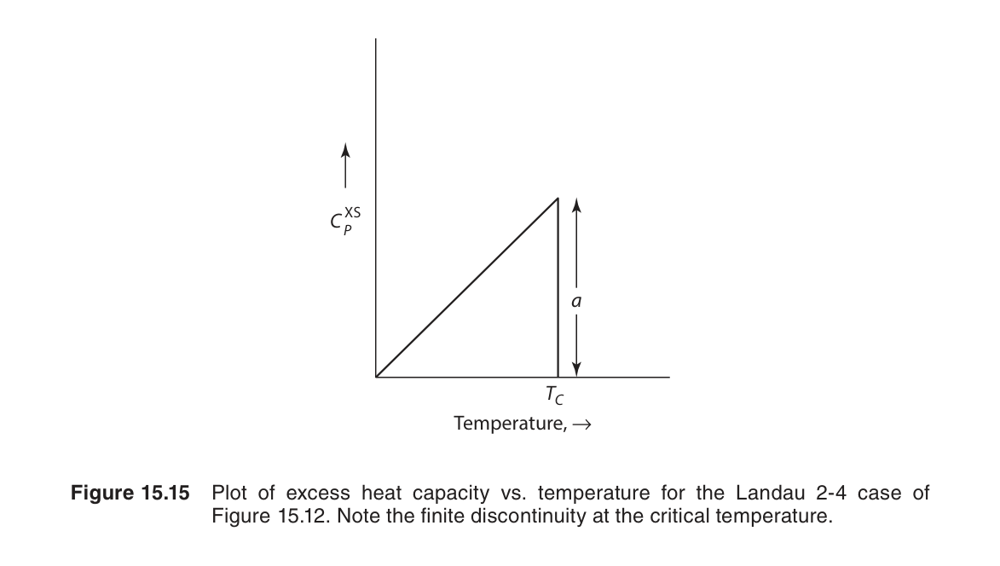
圖15.12：奧斯特瓦爾德熟化——大顆粒以犧牲小顆粒為代價成長。吉布斯–湯姆生效應使小顆粒周圍的溶質濃度高於大顆粒周圍，濃度梯度驅動擴散。最終粒徑分佈達到 LSW 自相似形態。
奧斯特瓦爾德熟化的動力學：LSW 理論精要
LSW 理論在以下假設下給出熟化動力學的精確解：(1) 析出物的體積分率極低（稀薄系統），(2) 析出物為球形，(3) 成長由基體中的擴散控制（而非界面反應控制）。關鍵結果：
其中 D 為溶質在基體中的擴散係數，Ceq 為平面界面下的平衡溶質濃度（莫耳分率），Vm 為析出相的莫耳體積。此 r̄³ ∝ t 律已被無數實驗驗證——例如 Ni 基超合金中 γ′ 析出物（Ni₃Al）的粗化。
LSW 理論還預測了粒徑分佈的自相似形態（scaled distribution）：當時間足夠長後，粒徑分佈函數歸一化為一通用曲線，最大粒徑不超過 1.5 r̄。任何大於 2 r̄ 的顆粒在熱力學上不穩定（因吉布斯–湯姆生效應的濃度耦合）。
毛細現象與局部平衡的廣義觀點
Gaskell 在本節末將毛細效應推廣至任意曲面。對於曲率半徑分別為 r₁ 與 r₂ 的一般曲面（非球形），吉布斯–湯姆生方程式推廣為：
式 15.7：楊–拉普拉斯方程式（Young–Laplace）
此壓力差 ΔP 改變了固相的化學勢，進而影響相平衡條件。在固態相變態中，當生成相與母相的比容不同時，界面附近的應力場也扮演類似角色——這在麻田散體變態的熱力學分析中尤為重要。
自編概念例：為什麼小顆粒先溶解？
小顆粒曲率大，Gibbs-Thomson 效應使其化學勢較高、平衡溶解度較高。當大小顆粒共存時，小顆粒周圍溶質濃度較高，溶質會擴散到大顆粒並使大顆粒長大，形成 Ostwald 熟化。
15.6 藍道相變理論的熱力學
二階相變態與序參數
前面各節處理的是一階相變態（first-order transition）——具有體積變化、潛熱、以及成核–成長動力學。本章最後一節引入藍道理論（Landau theory），處理二階（連續）相變態：有序–無序轉變（如 β-黃銅 CuZn 中的 B2↔无序 BCC）、鐵磁–順磁轉變、鐵電轉變等。此類相變態沒有潛熱、沒有體積跳躍、也沒有成核階段——序參數在整個系統中連續變化。
自由能的藍道展開
藍道理論的核心概念是引入一個序參數 η（order parameter）來表徵系統的有序程度（η = 0 為完全無序，η = ±1 可表徵完全有序）。自由能展開為 η 的偶函數級數（基於對稱性，奇次項在無外場時為零）：
式 15.8：藍道自由能展開（a, b > 0）
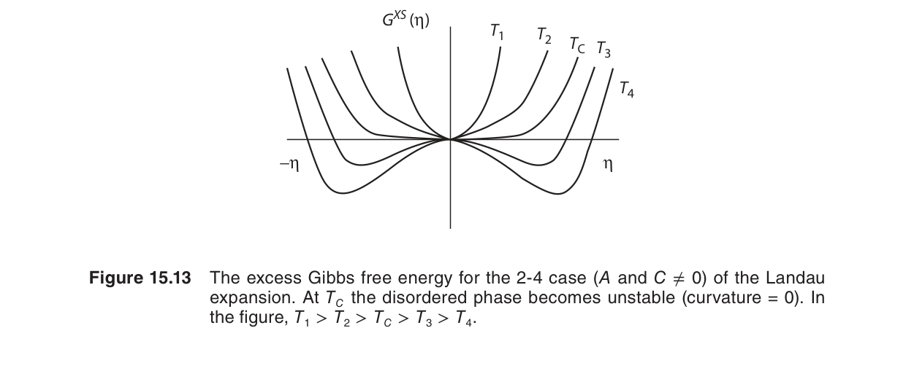
圖15.13：藍道自由能 G(η) 在 T > Tc 與 T < Tc 的形態——T > Tc 時 η = 0 為唯一極小（無序相穩定）；T < Tc 時 η = 0 變為局部極大，兩個對稱極小出現在 ±ηeq（有序相穩定）。
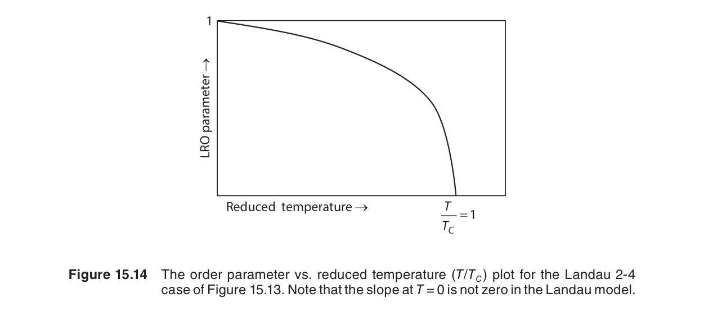
圖15.14：平衡序參數 ηeq 與溫度的關係——T → Tc− 時 ηeq ∝ (Tc−T)1/2 連續趨近於零，為二階相變態的典型特徵（β = 1/2）。
圖15.15：一階與二階相變態的 G(η) 比較——一階相變態（左）在 Tc 處出現兩個等深極小（η = 0 與 η ≠ 0），對應兩相共存與潛熱；二階相變態（右）的極小連續移動，無潛熱。
🔍 推導：藍道自由能展開——從對稱性到序參數行為
• 比熱跳躍：ΔCp = Tc·a²/(2β)，在 Tc 處不連續。
• 磁化率（或廣義響應函數）：χ = (∂²G/∂η²)−1 ∝ |T−Tc|−1，臨界指數 γ = 1（Curie-Weiss 律）。
以上均為平均場值，與大多數三維系統的實驗值接近但非精確吻合。
其中 Tc 為臨界溫度（Curie 溫度或有序–無序轉變溫度）。此式的行為：
- T > Tc：二次項係數 a(T−Tc) > 0，G(η) 在 η = 0 處有唯一極小值 → 無序相穩定。
- T = Tc：二次項係數為零，η² 項消失，系統處於臨界點。四階項 bη⁴ 主導。
- T < Tc：二次項係數 a(T−Tc) < 0，η = 0 變成局部極大，兩個對稱極小出現在 η = ±√[a(Tc−T)/2b] → 有序相穩定。
式 15.9：平衡序參數的溫度依賴性
從統計力學到藍道係數：微觀–宏觀橋樑
藍道自由能展開的係數 a 與 b 並非純現象學參數——它們與原子尺度的交互作用能有明確的對應關係。以 A-B 合金的有序–無序轉變為例（第4章），在 Bragg-Williams（平均場）近似下，系統的組態自由能可寫為：
其中 ω = εAB − (εAA+εBB)/2 為交換能，z 為配位數。將對數項在 η = 0 附近展開：ln(1±η) ≈ ±η − η²/2 ± η³/3 − η⁴/4 + …，保留至 η⁴ 項，整理得：
比較藍道形式 G(η) = G₀ + a(T−Tc)η² + bη⁴，即可識別：Tc = −zω/kB（有序化臨界溫度，需 ω < 0 即異類原子對較穩定），a = −kB/2，b = kBT/12。這展示了藍道係數如何從第一原理統計力學導出——藍道理論是平均場統計力學的現象學概括。
藍道理論的普適性：超越平均場
藍道自由能展開的威力在於其普適性（universality）——完全不同的物理系統（磁性、鐵電、有序–無序合金、超流體、液晶）只要具有相同的對稱性與序參數維度，就共享相同的臨界行為。此即普適類（universality class）概念：臨界指數僅取決於空間維度 d 與序參數維度 n，而與微觀細節（晶體結構、鍵能大小）無關。
| 普適類 | 序參數 n | 典型系統 | β（平均場） | β（3D 實驗） |
|---|---|---|---|---|
| Ising (n=1) | 1（純量） | 單軸鐵磁、有序–無序合金（CuZn）、液–氣臨界點 | 1/2 | ~0.326 |
| XY (n=2) | 2（平面向量） | 超流體 He⁴、平面鐵磁、超導體 | 1/2 | ~0.345 |
| Heisenberg (n=3) | 3（空間向量） | 等向性鐵磁（Fe, Ni） | 1/2 | ~0.365 |
表 15.2：普適類與臨界指數——藍道（平均場）β = 1/2 為所有普適類的共同平均場值，但真實三維系統的 β 值因臨界漲落而偏離。
藍道理論忽略漲落效應（即 Ginzburg 準則所描述的區域），但對於大多數材料科學問題，在離開 Tc 足夠遠的溫度範圍內，藍道描述已足夠精確。漲落的重要性由 Ginzburg 數 Gi 衡量：Gi ∝ (kB/ΔCpξ₀³)²，其中 ξ₀ 為微觀關聯長度。對於超導體，Gi ∼ 10−10（漲落可忽略）；對於液–氣臨界點，Gi ∼ 10−2（漲落顯著）。
藍道理論的預測
藍道理論不僅描述了有序–無序轉變，還給出了多項可檢驗的預測：
- 序參數的臨界行為：η ∝ (Tc − T)1/2，臨界指數 β = 1/2（平均場值）。
- 比熱的跳躍：在 Tc 處，Cp 呈現不連續跳躍（λ 型異常）。ΔCp = a²Tc/2b。
- 磁化率／響應函數的發散：χ ∝ |T − Tc|−1，臨界指數 γ = 1（居里–外斯定律）。
藍道理論在材料科學中的應用
Gaskell 列舉了藍道理論在材料系統中的具體應用：
- CuZn（β-黃銅）：在 ~740 K 發生 B2（有序 CsCl 結構）↔ 無序 BCC 的二階相變態。序參數為長程有序度 S（與第 4 章的 Bragg-Williams 參數一致）。
- Cu₃Au：在 ~663 K 發生有序–無序轉變，但此為一階相變態（具有潛熱），藍道理論需加入三次項或耦合至應變場才能描述。
- BaTiO₃ 的鐵電轉變：序參數為自發極化強度 P，Tc ~ 393 K。
- 鐵磁轉變（Fe, Ni, Co）：序參數為自發磁化強度 M。
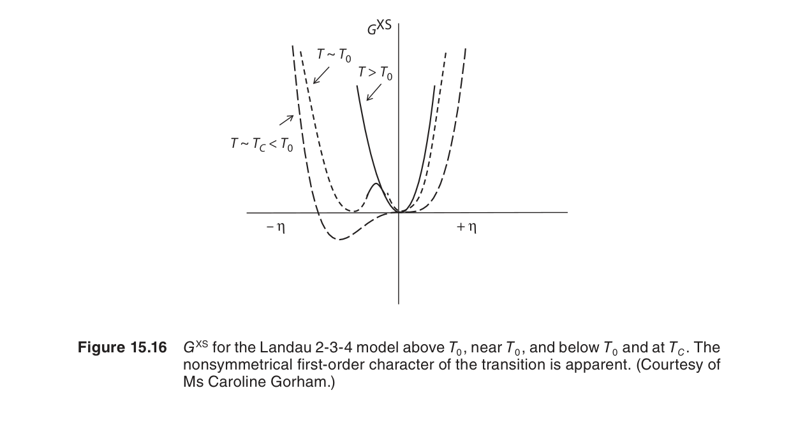
圖15.16：CuZn（β-黃銅）的有序–無序轉變——B2（CsCl 結構，有序）↔ BCC（無序）在 ~740 K 發生連續（二階）相變態。圖示長程有序參數 S 隨溫度變化。
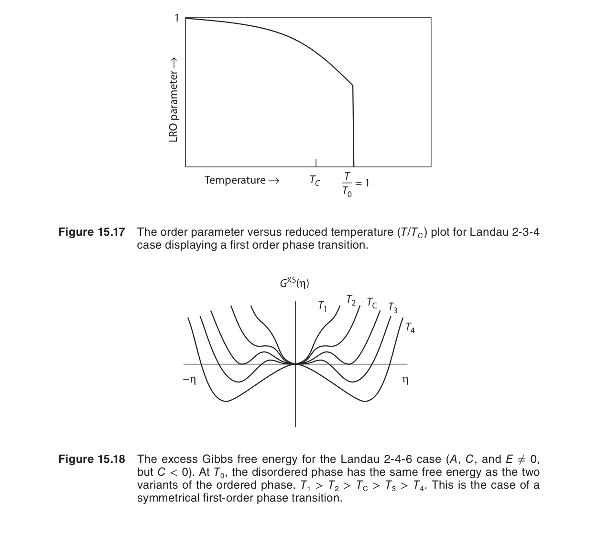
圖15.17：Cu₃Au 有序–無序轉變的比熱異常——在 Tc ~ 663 K 處出現 λ 型峰，為一階相變態的特徵（潛熱約 1.6 kJ/mol）。藍道理論需包含三次項方可描述。
圖15.18：BaTiO₃ 的鐵電相變態——在 Tc ~ 393 K 發生立方（順電）↔ 四方（鐵電）的二階相變態。序參數為自發極化 P，在 Tc 以下隨降溫而增大。
Spinodal 分解：藍道–金茲堡理論的另一應用
藍道–金茲堡理論中的梯度項 κ(∇η)² 不僅描述界面，更直接應用於Spinodal 分解（spinodal decomposition）——一種無需成核的相分離機制（第9章 正規溶液模型中 ∂²G/∂x² < 0 的區域）。當均勻溶液淬火至 spinodal 區域內，系統對任意微小的成分漲落都不穩定，自發地分解為兩相——此與成核–成長機制有本質區別。
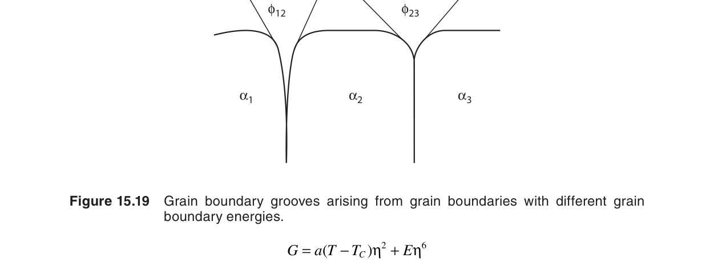
圖15.19：Spinodal 分解——自由能曲線上 ∂²G/∂x² < 0 的區域內，任意成分漲落均降低系統自由能，導致自發的上坡擴散（up-hill diffusion）。初期形成互聯的調幅結構，後期粗化為孤立顆粒。
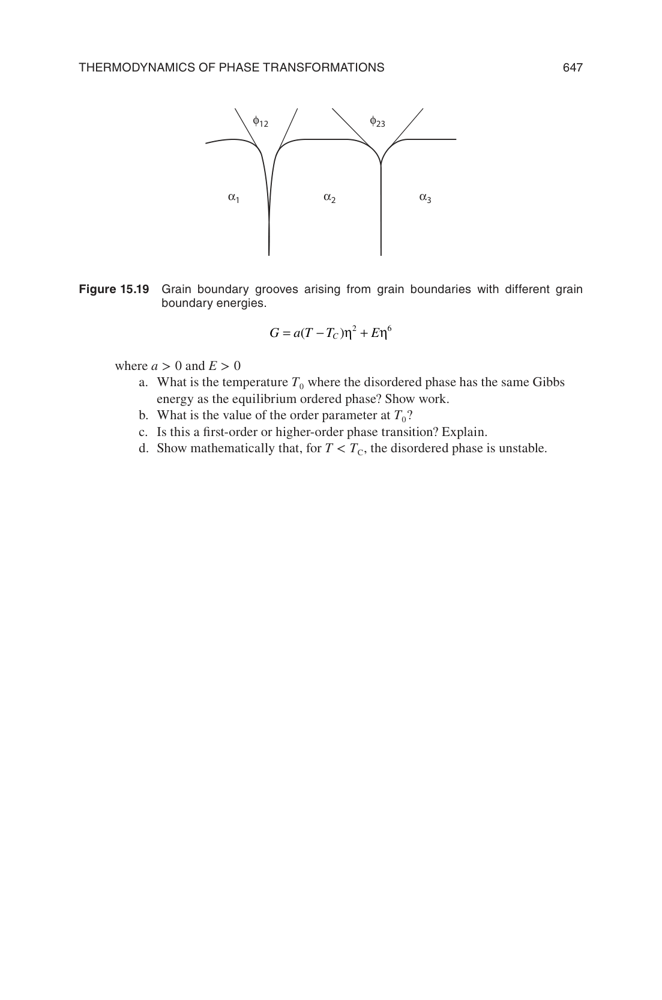
圖15.20：Spinodal 分解的波長選擇——Cahn-Hilliard 理論中，梯度能 κ(∇c)² 抑制短波長漲落，而 ∂²G/∂c² < 0 驅動分解，兩者競爭決定了最快成長波長 λm = 2π√[−2κ/(∂²G/∂c²)]。此波長對應實驗中觀察到的調幅結構週期。
在 spinodal 區域內，Cahn-Hilliard 理論（藍道–金茲堡對守恆序參數的推廣）預測初期分解的波長 λ ∝ [−κ/(∂²G/∂x²)]1/2，即梯度能 κ 傾向於選擇較長波長（界面少），而 ∂²G/∂x² 的負值（驅動力）傾向於較短波長（反應快）。此競爭決定了特徵微結構尺度——與吉布斯–湯姆生效應在熟化中的角色相呼應。
藍道–金茲堡理論簡介
Gaskell 在本節末觸及藍道理論的推廣——藍道–金茲堡（Landau-Ginzburg）理論——引入序參數的空間梯度項來描述非均勻系統（如界面、磁疇壁）。自由能泛函為：
其中 κ(∇η)² 項懲罰序參數的空間變化，其來源可追溯至原子間交互作用範圍。此推廣使得藍道理論可描述界面寬度、反相疇界（anti-phase domain boundary, APB）的能量，以及 spinodal decomposition 的早期階段——將本章的成核理論與藍道理論統一起來。
自編概念例：用序參數判斷相變階數
若自由能 $G(\eta)=G_0+a(T-T_c)\eta^2+b\eta^4$ 且 $b>0$，當 $T$ 低於 $T_c$ 時最小值從 $\eta=0$ 連續移到非零值，典型為二階相變。若自由能產生兩個不連續競爭最小值，則可能是一階相變。
關鍵公式彙整
| 公式 | 數學表達式 | 物理意義 | 節 |
|---|---|---|---|
| 驅動力（線性近似） | ΔGv ≈ (ΔHfus/Tm)·ΔT | 過冷度產生體積自由能差，驅動凝固 | 15.1 |
| 理查定律 | ΔSfus ≈ R ≈ 8.314 J/mol·K | 大多數金屬的熔化熵近似為氣體常數 | 15.1 |
| T₀ 條件 | Gα(x, T₀) = Gγ(x, T₀) | 同成分下兩相自由能相等的溫度 | 15.2 |
| 球形晶核 ΔG | ΔG(r) = (4/3)πr³ΔGv + 4πr²γ | 體積驅動力與界面能量代價的競爭 | 15.3 |
| 臨界半徑 | r* = −2γ / ΔGv | 晶核超過此半徑後自發成長 | 15.4 |
| 臨界成核能障 | ΔG* = 16πγ³ / [3(ΔGv)²] | 均質成核所需克服的自由能最大值 | 15.4 |
| 異質成核因子 | f(θ) = (2+cosθ)(1−cosθ)²/4 | 接觸角 θ 決定的能障縮減倍數 | 15.4 |
| 吉布斯–湯姆生 | ΔTr = 2γTm/(ΔHfus·r) | 曲率導致的熔點偏移 | 15.5 |
| 楊–拉普拉斯 | ΔP = γ(1/r₁ + 1/r₂) | 曲面界面造成的壓力差 | 15.5 |
| 藍道自由能 | G(η) = G₀ + a(T−Tc)η² + bη⁴ | 以序參數展開的自由能，描述二階相變態 | 15.6 |
| 平衡序參數 | ηeq = ±√[a(Tc−T)/2b] | T < Tc 時有序相的序參數值 | 15.6 |
重點對照表：一階 vs. 二階相變態
| 特徵 | 一階相變態（First-order） | 二階相變態（Second-order / Continuous） |
|---|---|---|
| 自由能的一階導數 | 不連續（V, S 跳躍） | 連續 |
| 潛熱 | 有（ΔH ≠ 0） | 無（ΔH = 0） |
| 體積變化 | 有（ΔV ≠ 0） | 無（ΔV = 0，或僅有高階變化） |
| 成核機制 | 需要成核（存在能障） | 無成核階段（序參數連續變化） |
| 界面 | 兩相共存，有明確界面 | 無明確界面（序參數梯度） |
| 理論架構 | 古典成核理論（15.4） | 藍道理論（15.6） |
| 材料範例 | 凝固、麻田散體變態、析出 | 有序–無序轉變（CuZn）、鐵磁–順磁（Fe） |
| Cp 行為 | 表現潛熱峰（δ 函數） | λ 型異常（有限跳躍） |
| 熱滯後 | 常見（過冷/過熱） | 無（或極小） |
跨章節連結：第 15 章與全書的脈絡
第 15 章並非孤島——它是前面多個章節的知識結晶。理解這些連結對掌握材料熱力學的整體架構至關重要：
| 章節 | 內容 | 與第 15 章的關聯 |
|---|---|---|
| 第 4 章 — 統計熱力學 | Bragg-Williams 近似、有序參數 S、組態熵 | 藍道理論（15.6）的微觀基礎：a 與 b 係數源自原子對交互作用能。有序–無序轉變的自由能可由第 4 章的平均場方法推導。Landau 展開的 Tc = −zω/kB 直接來自 Bragg-Williams 模型。 |
| 第 7 章 — 相平衡 | ΔG = 0 條件、化學勢相等、Clapeyron 方程式 | 15.1 的驅動力定義正是偏離第 7 章平衡條件時的 ΔG。吉布斯–湯姆生效應（15.5）的推導本質上是將 Clapeyron 方程式與楊–拉普拉斯壓力差結合。T₀ 條件（15.2）則是公切線法則（第 7 章）在無分配限制下的變體。 |
| 第 9 章 — 溶液熱力學 | 正規溶液模型、G(x) 曲線、化學勢 | T₀ 曲線（15.2）需要 G(x) 的具體函數形式。正規溶液參數 Ω 決定兩相 G(x) 曲線的形狀，從而影響 T₀ 的存在與位置。Spinodal 分解條件 ∂²G/∂x² < 0 直接來自第 9 章的正規溶液自由能。 |
| 第 10 章 — 相圖 | 二元相圖、共晶／共析反應、相界線 | T₀ 曲線（15.2）位於兩相區內。第 10 章的相圖提供判讀相變態類型的基礎知識。Fe-C 相圖是理解麻田散體變態 T₀ 線的必備背景。有序–無序轉變在相圖上呈現特定拓撲。 |
詳細交叉參照
| 第 15 章主題 | 前置知識 | 為何需要 |
|---|---|---|
| ΔGv 驅動力（15.1） | 第7章 ΔG = 0 平衡條件 | 驅動力定義為偏離平衡的 ΔG；第 7 章建立平衡的熱力學判據 |
| ΔGv ≈ ΔSfus·ΔT（15.1） | 第1章 G = H − TS | 線性近似依賴於 ΔCp ≈ 0 假設，需理解 G 的溫度依賴性 |
| T₀ 曲線（15.2） | 第9章 G(x) 正規溶液模型 | 計算 Gα(x,T) 與 Gγ(x,T) 需溶液模型 |
| T₀ 與相圖的關係（15.2） | 第10章 二元相圖判讀 | T₀ 線位於兩相區內，需理解相圖結構 |
| 界面能 γ（15.3） | 第4章 原子間交互作用能 | 斷鍵模型中的鍵能 ε 來自原子對交互作用 |
| 成核理論（15.4） | 第7章 化學勢與平衡 | 臨界晶核與母相處於不穩定平衡（∂ΔG/∂r = 0） |
| 吉布斯–湯姆生（15.5） | 第7章 Clapeyron 方程式 | 曲率誘導的熔點偏移可從 Clapeyron + Laplace 推導 |
| 藍道展開（15.6） | 第4章 Bragg-Williams 平均場 | 藍道係數 a、b 可從統計力學模型導出 |
| Spinodal 分解（15.6 延伸） | 第9章 ∂²G/∂x² 與穩定性 | Spinodal 化學邊界定義為 ∂²G/∂x² = 0 |
概念練習題
以下問題設計為幫助你檢驗對本章核心概念的理解（非 Gaskell 課本原題）：
問題 1：過冷度與臨界半徑
某金屬的 Tm = 1500 K，ΔHfus = 15 kJ/mol，γSL = 0.2 J/m²，莫耳體積 Vm = 8×10−6 m³/mol。
(a) 計算 ΔT = 100 K 時的 ΔGv 與 r*。
(b) 若 ΔT 增為 300 K，r* 變為多少？
(c) 解釋為何過冷度增大會降低臨界半徑。
問題 2：異質成核的接觸角效應
若某系統的均質成核能障 ΔG*hom = 1×10−17 J（在給定過冷度下），計算以下接觸角對應的異質成核能障：
(a) θ = 30° (b) θ = 60° (c) θ = 90° (d) θ = 120°
並討論在何種 θ 範圍內異質成核顯著優於均質成核。
問題 3：吉布斯–湯姆生效應
考慮純錫（Sn）的球形微粒：Tm = 505 K，ΔHfus = 7.03 kJ/mol，γSL = 0.055 J/m²，Vm = 1.62×10−5 m³/mol。
(a) 計算半徑 r = 50 nm 的錫微粒的熔點下降量 ΔTr。
(b) 若要熔點下降不超過 1 K，最小粒徑應為多少？
問題 4：藍道序參數
某材料遵循藍道理論，a = 0.05 J/(mol·K)，b = 200 J/mol，Tc = 800 K。
(a) 求 T = 700 K 時的平衡序參數 ηeq。
(b) 求 T = Tc − 50 K 時的 ηeq。
(c) 在 Tc 處，自由能曲線 G(η) 的形狀有何特徵？這對系統的漲落行為有何啟示？
問題 5：T₀ 曲線與麻田散體
在 Fe-C 系統中，奧氏體（γ）→麻田散體（α'）的 T₀ 溫度隨碳含量增加而下降。
(a) 從自由能–成分圖的角度解釋此趨勢。
(b) 為何 Ms（麻田散體開始溫度）低於對應的 T₀？
(c) 碳含量 0.8 wt% 的鋼材淬火後，為何微結構中常見殘留奧氏體？
常見錯誤
自我檢核
1. 為什麼過冷度增加會促進成核？
過冷度增加會放大體積自由能驅動力 $|\Delta G_v|$，使臨界半徑 $r^*$ 變小、成核能障 $\Delta G^*$ 降低，因此較容易形成可長大的晶核。
2. 異質成核為什麼比均質成核常見？
既有表面、晶界或夾雜物可取代部分新相/母相界面，降低有效界面能與成核能障，因此異質成核所需熱漲落較小。
3. Gibbs-Thomson 效應如何導致 Ostwald 熟化？
小顆粒曲率大、化學勢與平衡溶解度較高，因此會溶解並讓溶質擴散到大顆粒；總界面面積下降，系統自由能降低。
4. 二階相變中序參數如何變化？
在理想二階相變中，序參數從臨界溫度以上的零值連續變為非零值，沒有潛熱，但熱容或磁化率等二階導數可能出現異常。
延伸學習
- 延伸教材：Porter & Easterling 的相變態專書可補足本章略過的成長動力學與 TTT/CCT 圖。
- 計算工具：相場法、CALPHAD 與 Cahn-Hilliard/Allen-Cahn 模型可將本章自由能概念轉為微結構模擬。
- 工程應用：鑄造晶粒細化、析出硬化、spinodal 強化、麻田散體轉變與燒結熟化都可由本章的熱力學語言統一描述。
本章總結
第 15 章將熱力學從「平衡狀態的性質」推展至「邁向平衡的過程」，完整回答了相變態的三個基本問題：
- 為何發生？——因為 ΔG < 0（15.1）。過冷度、過飽和度或溫度偏離 T₀ 提供驅動力。
- 何時可能發生？——當熱漲落可克服成核能障 ΔG*（15.3–15.4），或序參數開始自發偏離零值（15.6）。
- 生成相的形貌與尺寸如何？——由界面能 γ、彈性應變能與吉布斯–湯姆生效應共同決定（15.3、15.5）。
本章的核心張力在於體積驅動力（∝ r³，有利於相變態）與界面能量代價（∝ r²，不利於相變態）之間的競爭。這個競爭定義了臨界半徑 r*，並透過吉布斯–湯姆生效應延伸到微結構的長期演化（奧斯特瓦爾德熟化）。藍道理論則補充了另一類無成核能障的相變態圖像，以序參數的連續變化取代古典的成核–成長範式。
從全書的視角看，第 15 章是熱力學與材料科學其他分支（動力學、微結構演化、機械性質）之間的橋樑。掌握了本章，你已具備從熱力學第一原理出發，理解材料製程（鑄造、熱處理、析出硬化）與微結構設計的理論基礎。